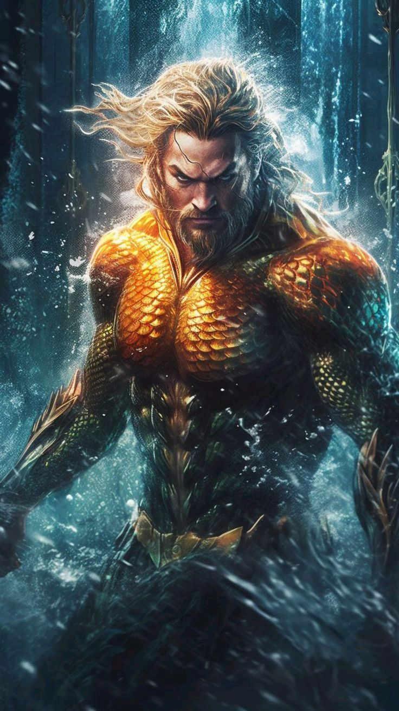
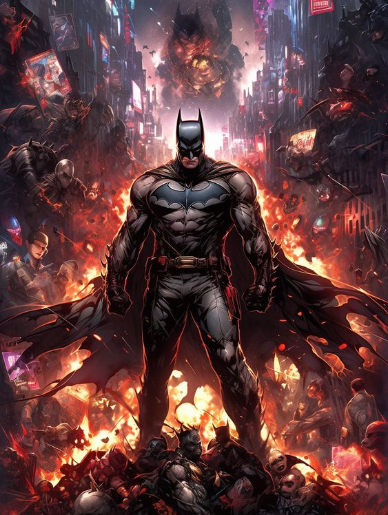
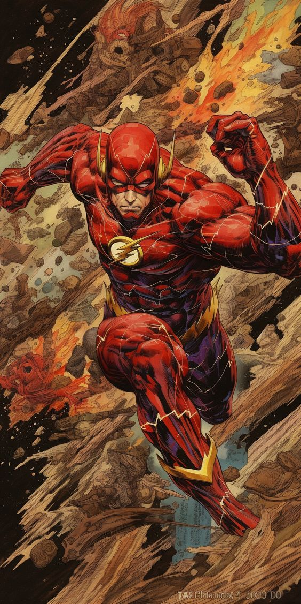
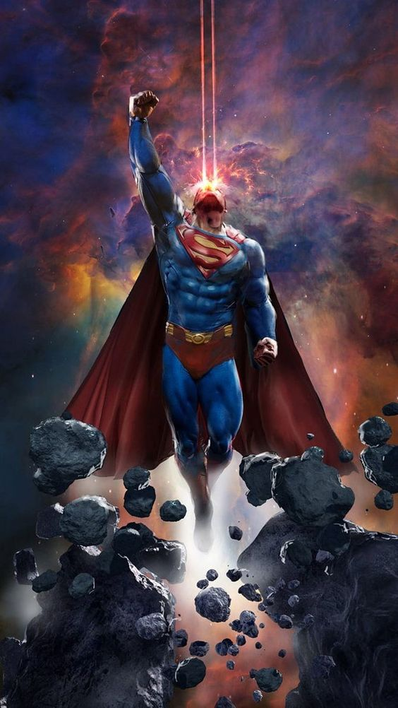
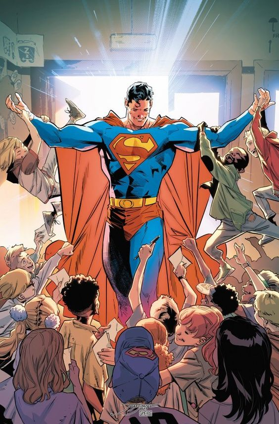
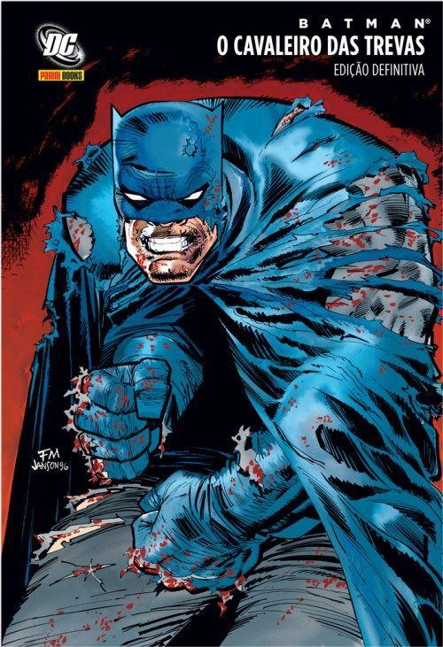
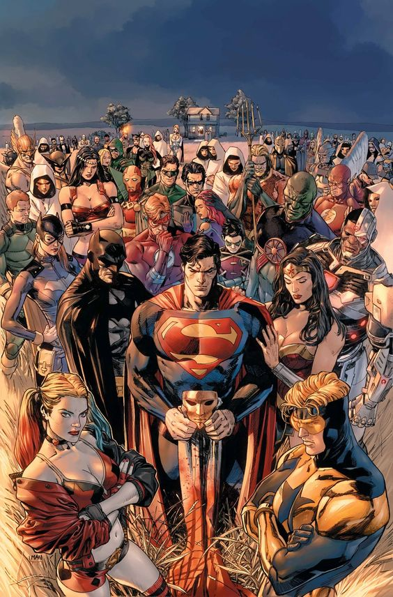
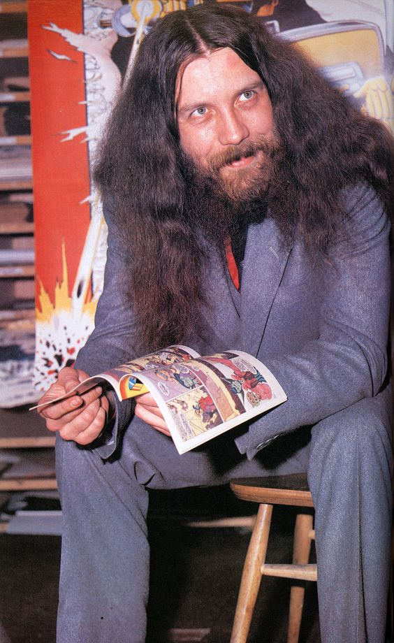

HISTÓRIA DOS PRINCIPAIS PERSONAGENS DA DC NAS HQ'S






RECOMENDAÇÕES
SOBRE O UNIVERSO DE HQ'S DA DC
 |
PRIMEIRA HQ DA DC Superman, o herói de Krypton, foi o primeiro personagem com superpoderes a estrelar as comics da DC. A icônica figura que usa uniforme azul e capa vermelha surgiu na Action Comics #1, lançada em 1938 sob a história escrita por Jerry Siegel e Joe Shuster |
HERÓI MAIS CONHECIDO Action Comics (Superman) - 600 milhões As histórias do Homem de Aço fazem o mundo dos quadrinhos girar há quase oito décadas. Considerado o super-herói quintessencial, Superman definiu e define padrões que são seguidos por toda a indústria. Nascido em um planeta alienígena mas criado por fazendeiros terráqueos, Kal-El (ou Clark Kent) lida com questões de identidade própria enquanto enfrenta ameaças à humanidade. |
 |
|  | UMA DAS MELHORES Escrita e desenhada por Frank Miller, a história acompanha um Batman envelhecido após anos e anos de combate em Gotham City, que precisa retornar da aposentadoria. Lançada em 1986, a HQ apresentou uma narrativa política e psicológica que estabelece o Homem-Morcego como uma figura complexa e sombria – algo que seria retomado por diversos autores desde então. É considerada uma das melhores HQs já produzidas e foi uma das responsáveis por inserir temas adultos no mundo de super-heróis. |
DC UNIVERSE Sendo uma das empresas que mais vende hq's da indústria, a DC conta com mais de 30.000 personagens no Universo DC, esta é a listagem mais completa em existência. Em toda a história da DC Comics nos quadrinhos, o Universo DC teve até agora 52 Terras do multiverso. |
 |
PRINCIPAIS AUTORES
Alan Moore
Grant Morrison
Jack Kirby